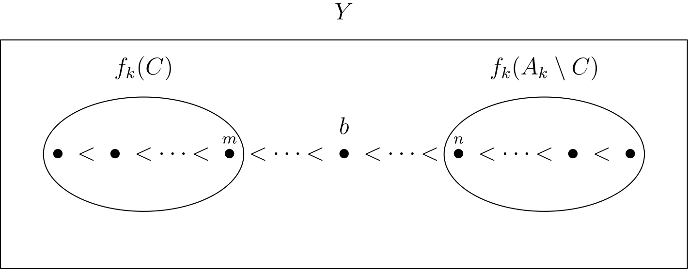
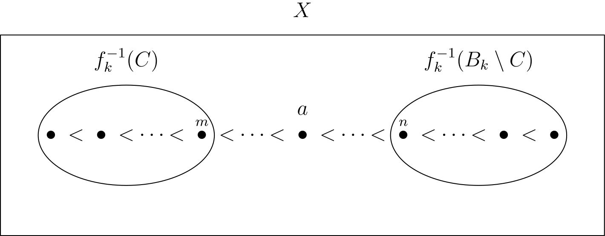

The countable, dense linear order without endpoints
A set $X$ is called strictly linearly ordered if there is an order $\lt$ on $X$ such that:
- For all $a$, $b$, $c \in X$, if $a \lt b$ and $b \lt c$, then $a \lt c$ (transitivity)
- For all $a$, $b \in X$, exactly one of $a = b$, $a \lt b$, $b \lt a$ is true (trichotomy)
Say that $X$ is dense if for all $a$, $b \in X$ with $a \lt b$, there exists $c \in X$ such that $a \lt c \lt b$. Think $(\mathbb{R}, \lt)$, $(\mathbb{Q}, \lt)$ and $([0,1] , \lt)$, but not $(\mathbb{Z}, \lt)$.
Say that $X$ has no endpoints if for all $a \in X$, there exist $b$, $c \in X$ such that $b \lt a \lt c$. Think $(\mathbb{R}, \lt)$ and $(\mathbb{Z}, \lt)$, but not $(\mathbb{N}, \lt)$ or $([0, 1], \lt)$.
An example of a dense linear order with no endpoints is $(\mathbb{R}, \lt)$, but notice that this order is not countable. The countable, dense linear with no endpoints is $(\mathbb{Q}, \lt)$. Why the definite article? A remarkable fact about countable, dense linear orders without endpoints (that we proved as a tutorial problem in MT5861 Advanced Combinatorics at St Andrews) is that there is precisely one up to isomorphism.
Definition. If $(X, \lt)$ and $(Y, \lt)$ are linear orders, then a bijection $f \colon X \to Y$ is called an order isomorphism if for every $a$, $b \in X$ with $a \lt b$, we have $f(a) \lt f(b)$. Notice that, by trichotomy, there are no non-relations to be preserved, so being an order isomorphism is the same as being a bijective order homomorphism. We write $X \cong Y$ to denote order isomorphism.
Theorem. Let $X$ and $Y$ be countable, dense linear orders without endpoints. Then $X \cong Y$.
The proof of this is the original example of a so-called back-and-forth argument, used frequently in infinite combinatorics (another example being the random graph, which I think should instead be named the indestructible graph). This argument is due to Cantor.
Proof. Since $X$ and $Y$ are countable, we can enumerate them as $X = \set{a_0, a_1, a_2 \dots}$ and $Y = \set{b_0, b_1, b_2, \dots}$ (this enumeration definitely does not respect the orders). The idea is to inductively define an order isomorphism $f \colon X \to Y$ by adding an element of $X$ to the domain of $f$ at every even step, and adding an element of $Y$ to the image of $f$ at every odd step. This is the 'back-and-forth,' and is the reason we will be able to declare that the domain of $f$ is the whole of $X$, and the range of $f$ is the whole of $Y$. We will 'feed' our enumerations of $X$ and $Y$ into $f$, one element at a time.
Base case: Define $f_0 \colon \set{a_0} \to \set{b_0}$ by $f_0(a_0) = b_0$. This is an order isomorphism from $\set{a_0}$ to $\set{b_0}$ since there are no relations to check.
Inductive step: Assume that the isomorphism $f_k \colon A_k \to B_k$ has been constructed, where $A_k \subseteq X$, $B_k \subseteq Y$ are finite sets. The next step depends on whether $k$ is even or odd.
-
Assume that $k$ is even. We will add the next element in our enumeration of $X$ which hasn't yet been added to the domain of $f_k$. Let $a_i \in G$, where $i$ is the
smallest natural number such that $a_i \notin A_k$. Define the set $C$ to be everything in $A_k$ which is less than $a_i$, that is $C = \set{c \in A_k \mid c \lt a_i}$
($C$ may be empty, but this is accounted for). By trichotomy, (and since $a_i \notin A_k$), we can say that $A_k \setminus C = \set{ d \in A_k \mid a_i \lt d}$. Consider
the sets $f_k(C)$ and $f_k(A_k \setminus C)$. Since $f_k$ is a bijection, these are disjoint, finite subsets of $B_k$ such that $B_k = f_k(C) \cup f_k(A_k \setminus C)$.
We want to find $b \in Y$ such that $c \lt b \lt d$ for all $c \in f_k(C)$ and $d \in f_k(A_k \setminus C)$. Naturally, this depends on whether one of $f_k(C)$ or
$f_k(A_k \setminus C)$ is empty, and this is where will be use both the assumptions of density and no endpoints.
- Suppose that $f_k(C) = \emptyset$. Then $f_k(A_k \setminus C) = B_k$. Since $B_k$ is a finite linear order, it has a minimum element $n \in B_k$ such that, for all $d \in B_k$, we have either $n \lt d$ or $n = d$. Since $Y$ has no endpoints, there exists $b \in Y$ such that $b \lt n$. By transitivity, $b \lt d$ for all $d \in B_k$. This gives the desired $b$.
- Suppose that $f_k(C) = B_k$, so $f_k(A_k \setminus C) = \emptyset$. This argument is dual to the previous one, using the endpoint condition on the other side. Since $B_k$ is a finite linear order, it has some maximum element $m \in B_k$ such that, for all $d \in B_k$, either $d \lt m$ or $d = m$. Since $Y$ has no endpoints, there exists $b \in Y$ such that $m \lt b$. By transitivity, $d \lt b$ for all $d \in B_k$. This gives the desired $b$.
- Suppose that $f_k(C) \ne \emptyset$ and $f_k(C) \ne B_k$. Since $f_k(C)$ is a finite non-empty linear order, it has a maximal element $m \in f_k(C)$ such that, for all $c \in f_k(C)$, either $c \lt m$ or $c = m$. Similarly, since $f_k(A_k \setminus C)$ is a finite non-empty linear order, it has a minimal element $n \in f_k(A_k \setminus C)$ such that $n \lt d$ or $n = d$ for all $d \in f_k(A_k \setminus C)$. Since $Y$ is dense, there exists an element $b \in Y$ such that $m \lt b \lt n$. Then, by transitivity, we have $c \lt b \lt d$ for all $c \in f_k(C)$ and $d \in f_{k}(A_k \setminus C)$, as desired.
Now that we have a suitable choice of $b$, we can define $f_{k+1} \colon A_k \cup \set{a_i} \to B_k \cup \set{b}$ by $f_{k+1}(a_i) = b$, and $f_{k+1}(a) = f_k(a)$ for all $a \in A_k$. By the inductive hypothesis, for any $a$, $a' \in A_k$ with $a \lt a'$, we have $f_{k+1}(a) \lt f_{k+1}(a')$. By the choice of $b$, for any $a \in A_k$ with $a \lt a_i$, we have $f_{k+1}(a) \lt f_{k+1}(a_i) = b$, and for any $a \in A_k$ with $a_i \lt a$, we have $b = f_{k+1}(a_i) \lt f_{k+1}(a)$. Therefore, $f_{k+1}$ is an order isomorphism, completeing the induction.
-
Assume that $k$ is odd. Since $f_k$ is a bijection, it has an inverse $f_k^{-1}$. This lets us play the same argument that we used on the forth case on the back case.
To that end, let $b_i \in Y$, where $i$ is the smallest natural number such that $b_i \notin B_k$. Define the set $C$ to be everything in $B_k$ which is less than $b_i$, that is $C = \set{c \in B_k \mid c \lt b_i}$. By trichotomy, (and since $b_i \notin B_k$), we can say that $B_k \setminus C = \set{ d \in B_k \mid b_i \lt d}$. Consider
the sets $f_k^{-1}(C)$ and $f_k^{-1}(B_k \setminus C)$. Since $f_k$ is a bijection, $f_k^{-1}$ is a bijection, so these are disjoint, finite subsets of $A_k$ such that
$A_k = f_k^{-1}(C) \cup f_k^{-1}(B_k \setminus C)$. Now, by the same argument used in the $k$ even case, we can find $a \in X$ such that $c \lt a \lt d$ for all
$c \in f_k^{-1}(C)$ and $d \in f_k^{-1}(B_k \setminus C)$. This is where the density and no endpoints properties of $X$ are used.
Defining $f_{k+1}$ the same way we did in the previous part, but with $f_{k+1}(a) = b_i$, we get an order isomorphism, completing the induction.

Now define $$f = \bigcup_{i \in \mathbb{N}_0} f_i.$$ Since each $a_i \in X$ is accounted for at some even step in the induction, it follows that the domain of $f$ is the whole of $X$. Since every $b_i \in Y$ is accounted for at every odd step of the induction, it follows that the image of $f$ is the whole of $Y$. Since $f_i$ is an order isomorphism for every $i \in \mathbb{N}_0$, it follows that $f$ is an order isomorphism. Therefore, $X \cong Y$. $\square$